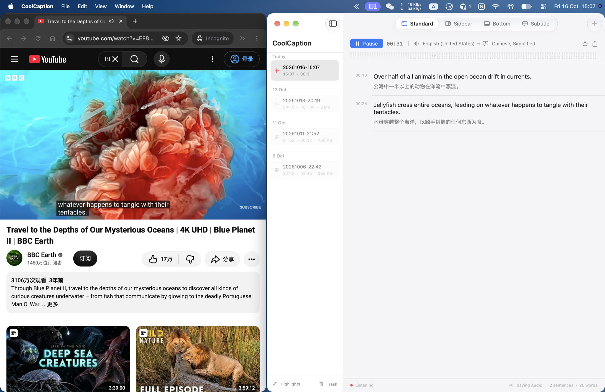
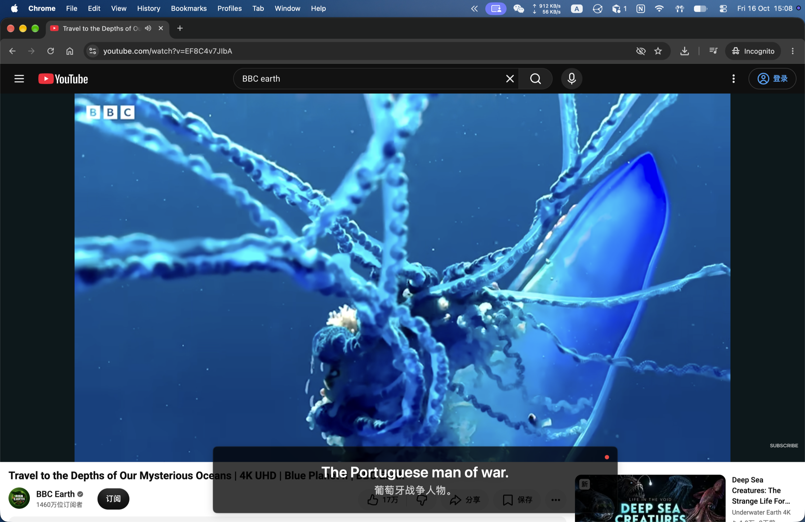
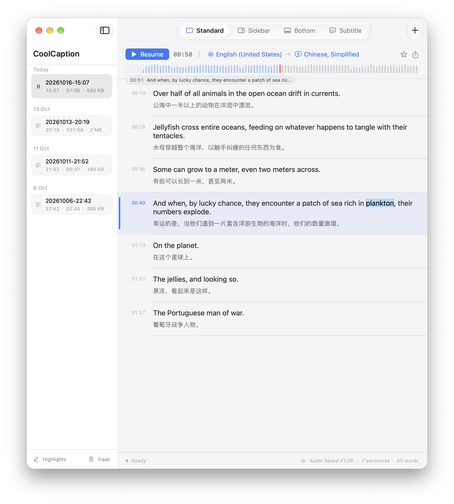
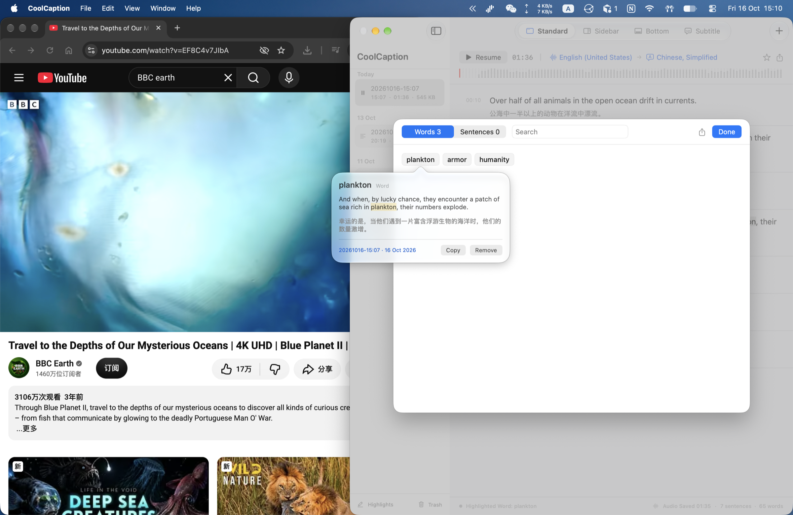

CoolCaptionmacOS 26
Mac 里每一句声音，
都有双语字幕。
Every sound on your Mac,
in bilingual captions.
捕获系统音频，在本机识别并翻译。看视频、听播客、练听力，原文与译文同步滚动。 Capture system audio, transcribe and translate on your Mac. Original and translation scroll in sync.

悬浮字幕Floating subtitles
字幕，就浮在画面上。Captions that float on the picture.
透明字幕窗口置顶显示，可拖动、可缩放，不打断你正在看的内容。An always-on-top, movable, resizable caption window that stays out of the way.

四种视图Four views
按你看的方式，
选一种布局。Pick the layout
that fits how you watch.
标准Standard
侧栏Sidebar
底部Bottom
悬浮字幕Subtitle
音频回放Audio replay
错过的那句，
拖回去再听。Missed a line?
Drag back and listen.
开启“保存音频”，在波形时间轴上拖动，即可回到任意时刻，字幕同步定位。Turn on Save Audio, then drag the waveform timeline to any moment. Captions follow along.

词句收藏Highlights
遇到生词，
当场收藏。Meet a new word?
Save it on the spot.
高亮单词与句子，随时回看原句、译文与来源记录。Highlight words and sentences, then revisit the original line, translation and source.
单词Words句子SentencesJSONL

本地处理On-device
声音留在
你的 Mac 上。Your audio
stays on your Mac.
使用 Apple SpeechAnalyzer 与 Apple Translation 在设备上识别、翻译。没有账号，没有广告，不上传到开发者服务器。Powered by Apple SpeechAnalyzer and Apple Translation, on device. No account, no ads, nothing uploaded to developer servers.
SpeechAnalyzerApple TranslationScreenCaptureKit
导出Export TXT · SRT · JSONL